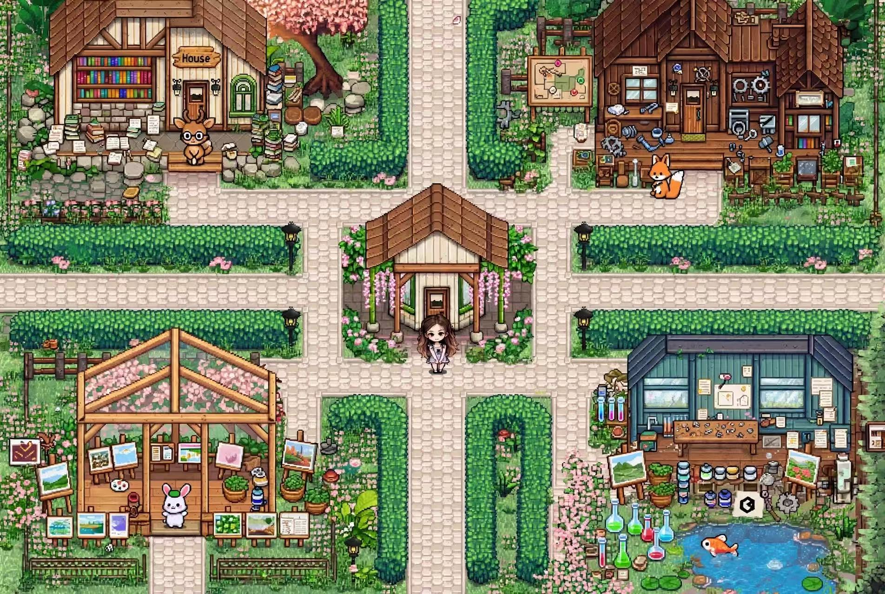

<!doctype html><html lang="zh-CN"><meta charset="utf-8"><meta name="viewport" content="width=device-width,initial-scale=1"><title>森林工作台 · 通用版</title><link rel="stylesheet" href="style.css"><header><strong>森林工作台</strong><span id="saved">数据保存在此浏览器</span><button id="theme">昼夜切换</button><button id="guide">游玩指引</button></header><main><div id="scene"><div id="spots"></div></div></main><dialog id="panel"><header><h2 id="title"></h2><button id="close">关闭</button></header><div id="body"></div></dialog><script type="module" src="app.mjs"></script></html>
